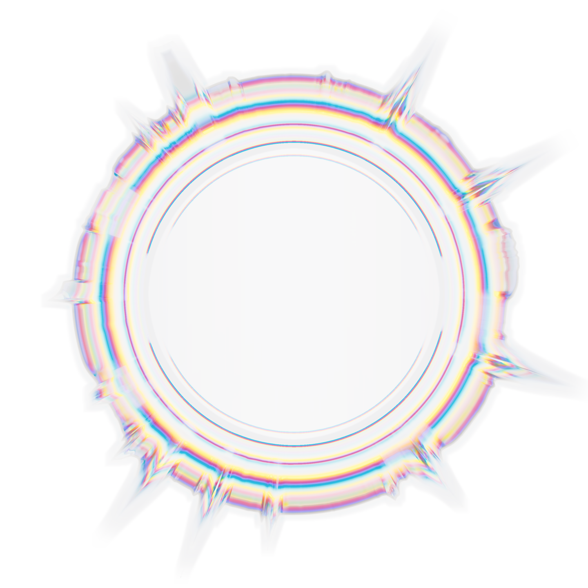
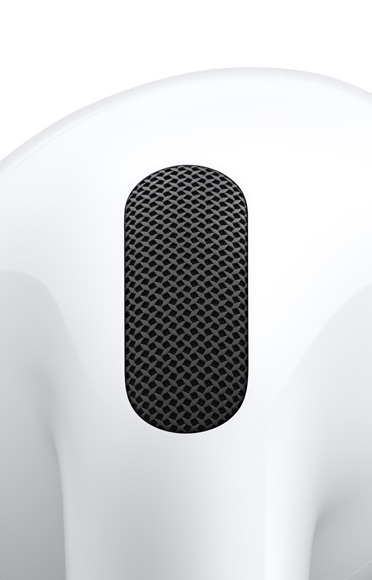
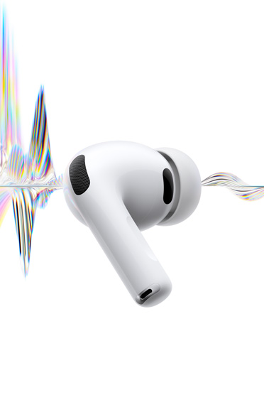
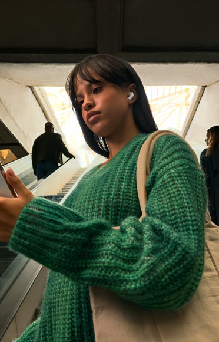
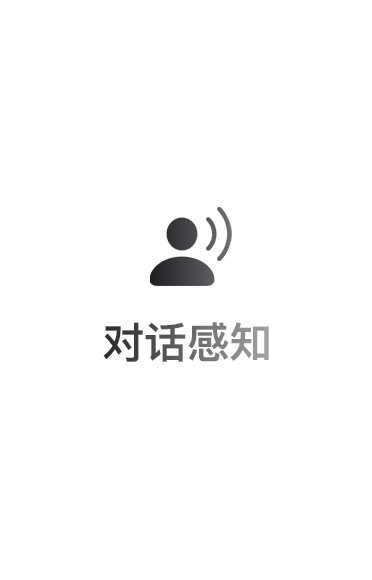
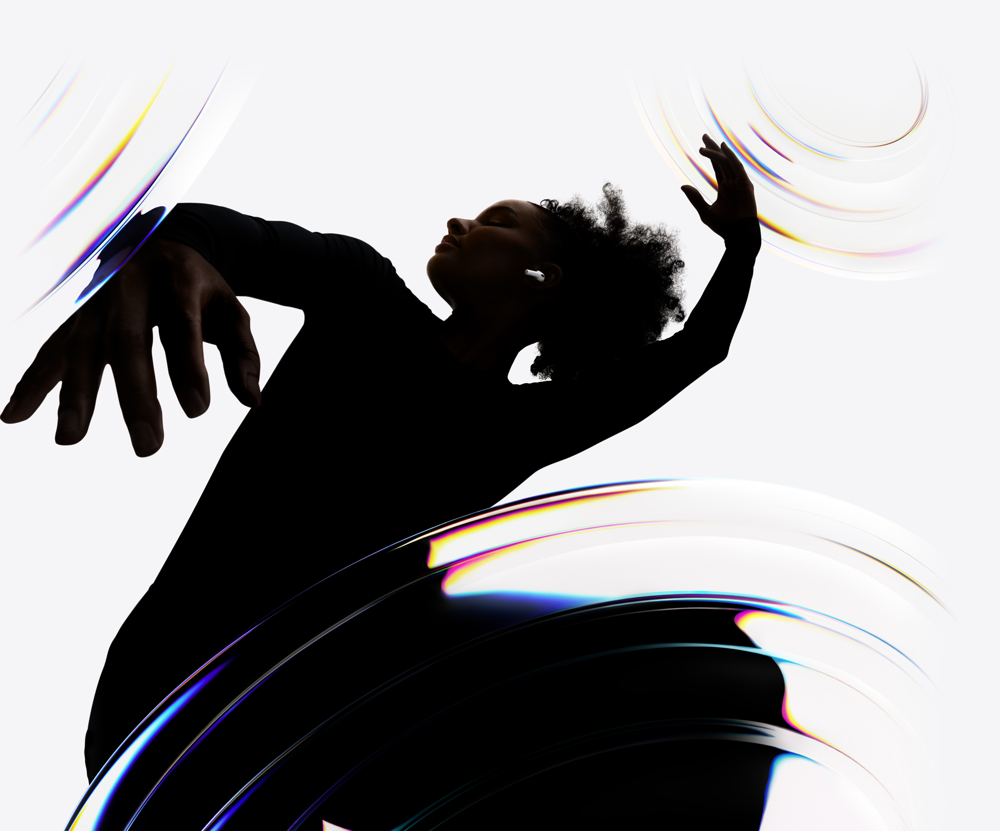
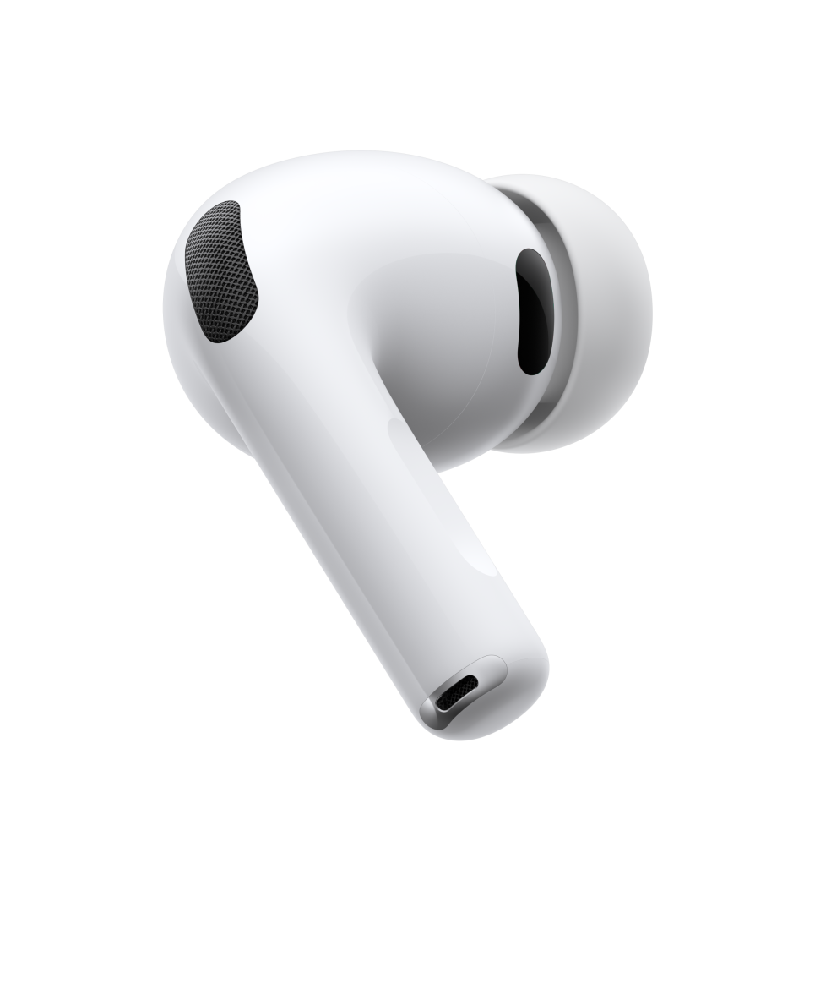
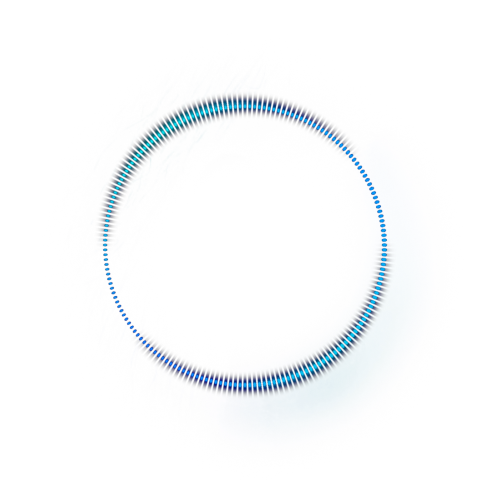

智能噪声控制
天籁，不入耳。

AirPods Pro 3 可运用先进的计算音频技术，消除更多的环境噪声，助你随时保持专注或自在放空。全新耳塞提供五种尺寸选择，其中包括 XXS 号，耳塞的硅胶体中还加入薄薄的柔软泡沫材料层，让声学表现更出色。9

全新超低噪声麦克风。
AirPods Pro 3 能在你通话时降低背景噪声，同时突显对话声音。因此，不管你是在公交车上还是咖啡馆里，每次通话都能听得清清楚楚。10

语音突显。
AirPods Pro 3 能在你通话时降低背景噪声，同时突显对话声音。因此，不管你是在公交车上还是咖啡馆里，每次通话都能听得清清楚楚。10

自适应音频。
AirPods Pro 3 融合主动降噪功能和优化的通透模式，让你和周围的声音听起来更加生动自然；同时它还会根据所处环境智能调整，优先让你听清最想听到的声音。11

对话感知。
当 AirPods Pro 3 感知到你在和身边的人说话时，会自动调低播放音量，并在对话结束后马上恢复音量。12
音频性能
好声音，由科技领衔。
AirPods Pro 3 由 Apple 设计的 H2 芯片强势驱动，声学架构全面重塑，无论你想畅听动感好歌，还是每周和家人电话聊天，它都能为你带来十足震撼的环绕声体验。
新的多孔声学架构可以更精准地控制气流，通过直指耳道的内向式麦克风传送声音，带来更深沉的低音和清晰生动的人声表现，营造更广阔的音场，让每一个音符都听得真真切切。
定制的驱动单元和放大器配合 H2 芯片，可打造高清 3D 音效，也能让播放时失真度超低。2
个性化聆听体验
只为取悦你双耳
AirPods Pro 3 具备新一代自适应均衡功能，可根据你的耳形和佩戴贴合度，为你量身打造声音效果。个性化音量功能则会运用机器学习技术，了解你的聆听习惯，然后逐渐匹配你的偏好。13

健身
心率传感功能，贴心上线。

全新心率传感功能可在你锻炼时，帮你测量心率和卡路里消耗。借助每秒 256 次非可见光脉冲的 LED，以及基于多个加速感应器的传感器融合技术，AirPods Pro 3 可为你的各类体能训练提供精准的测量数据，健身 app 中的 50 多种项目都适用。而有了更稳更贴耳的设计，你只管放开练起来，不必担心耳机会掉下来。3
健身 App。只需 AirPods Pro 3 和 iPhone 搭配，就能在健身 app 中开启全新的运动体验，有步行、单车和 HIIT 训练等各种项目任你一试身手。你还能设置喜欢的音乐和播客，在你锻炼时自动播放。此外，你可以随时查看活动圆环，不断给自己激励。
IP57 级别防尘、抗汗、抗水。
AirPods Pro 3 是首款达到 IP57 级别的 AirPods，格外经久耐用。得益于精密工艺与严格测试，哪怕你是在挥汗如雨地体能训练，它也能从容应对。6
为听力护航
强噪音，尽可能减轻。

降低高音量功能，会尽可能为你减弱强噪音。对话增强功能，让你专注聆听面前说话者的声音。背景音功能，可播放海浪或下雨等舒缓的声音，以此来帮你弱化环境噪音。

在 Apple 购买 AirPods，好处多多。
选购 AirPods
免费镌刻服务
给你的新 AirPods 加点个性。
表情符号、名字、缩写和数字随心混搭，让它专属于你。

送货和取货
可免费送货，也可到店取货。
所有订单均可享免费送货。部分订单可选择免费的三小时快送，或亲自到店取货。

分期付款服务
分期付款方案任你选。
各种方便的分期付款方案，为你更添轻松。支付宝新增多家银行支持分期，最长可享 24 个月免息分期。

导购
Specialist 专家协助选购。
无论线上还是在 Apple Store 零售店，我们都能帮你找到心仪的产品，并解答你的各种疑问。

Apple Store App
专属于你的购物体验。
更个性化的购物方式，尽在这款 app。
看看哪款 AirPods 适合你
探索全部 AirPods 机型